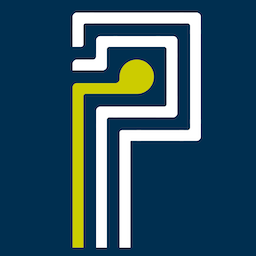
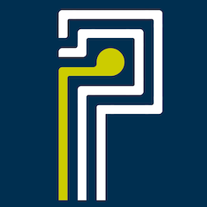

 We sink seaweed to stabilize the climate
Phykos is an ocean carbon dioxide
removal company.
We amplify natural marine carbon cycles to
remove excess atmospheric CO2 at climate relevant scale.
 We sink seaweed to stabilize the climate
Phykos is an ocean carbon dioxide
removal company.
We amplify natural marine carbon cycles to
remove excess atmospheric CO2 at climate relevant scale.
2022.02.17: Phykos joins Ocean Visions' Launchpad Program to advance ocean CDR , Ocean Visions Blog
2021.09.27: These carbon-capturing robotic seaweed farms are like planting forests in the ocean , FastCo
We cultivate seaweed and sink it deep in the ocean, mimicking a carbon sequestration process that occurs naturally with coastal seaweed beds and safely sequestering excess carbon for 1,000 years or more; reducing the danger of catastrophic climate change.
If you would like to learn more about ocean carbon removal, head over to the OceanCDR website. For more information about carbon removal in general, the CDR Primer is a great place to start. Both resources are community driven, non-profit, and vetted by scientists and policymakers active in the field. If you are interested in joining or collaborating with Phykos, see Careers below.
Please note that our seaweed carbon offset product is not currently available for general sales. We anticipate opening our sales pipeline in 2024 through a network of trusted brokers. If you would like to learn more, please contact sales@phykos.com.
We met while working on moonshots and new projects at Google X. Generalists and builders, we are passionate about oceans and positive solutions to the peril of severe climate change.
Between us, we've worked on solar power, wireless lighting efficiency, marine satellite communications, stratospheric balloon networks, and satellite command and control systems. We've built houses and farms and families, and we've travelled widely to see firsthand just how precious this world is.
We are not currently hiring but expect to open a few new roles in 2024. When ready they will be posted to Y Combinator's Work at a Startup website. Thanks for your interest!
At Phykos, we are committed to building a diverse team in an inclusive environment that fosters collaboration and growth. All qualified applicants are encouraged to apply and non-traditional backgrounds are welcome.
Protecting the global environment from climate change will require all of us to engage with the problem and actively deploy positive solutions. We are grateful to be one of many hands working together to safeguard our planet and build a better future for generations to come.
Phykos is a registered Public Benefit Corporation with a mission to develop and implement biological climate stabilization systems while enhancing the health and productivity of the world's oceans.